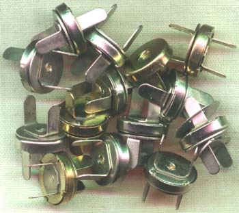
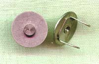
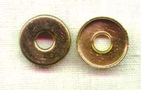
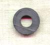
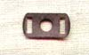
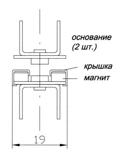
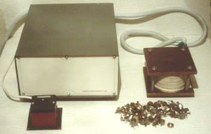

Магнитная кнопка (магнитная застежка)

Магнитная кнопка (застежка) может быть использована в качестве элемента фурнитуры на палатках, чехлах, сумках, шторах, верхней одежде и т. п.
Магнитная кнопка (застежка) состоит из следующих элементов:

основание (2 шт.)

крышка (1 шт.)

кольцевой магнит (феррит бария) (1 шт.)

крепежный фланец (2 шт.)
Размер кнопки: внешний диаметр - 19 мм, высота - 7 мм (в защелкнутом состоянии без учета крепежных элементов).

Данная конструкция создает магнитное поле рассеяния незначительной величины, что исключает его воздействие на человеческий организм при использовании кнопки в производстве одежды. Кнопки могут изготавливаться любых размеров с различными усилиями на разрыв. В зависимости от выбора материала крышки и основания или их покрытия можно варьировать цветовую гамму изделий.
Для намагничивания магнитов или кнопок в сборе может быть использована установка импульсного намагничивания [6] в составе импульсного генератора [1 - 3] с соленоидом в качестве намагничивающего устройства (см. фото).

Провести измерения усилия на отрыв можно с помощью силоизмерительной установки [5].
Ссылки:
11.02.2004
23.06.2010
Альтернативные источники
энергии
Компьютеры и
Интернет
Магнитные поля
Механотронные системы
Перспективные
разработки
Электроника и
технология